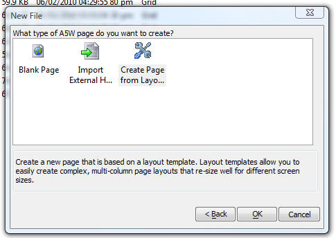
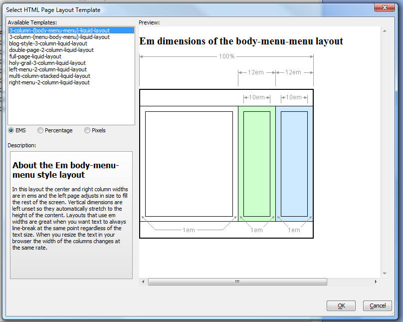
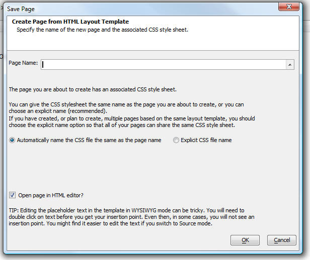

Web Applications
Create new .A5W Page with HTML Layout Page Templates
When you create a new .a5w page, a new option allows you to base the page on a Layout Template. Layout Templates allow you to create complex multi-column layouts that resize intelligently when the size of the browser window changes. The Layout Templates are based on open-source designs.When you create a new .a5w page, you will see a new option:

If you select the 'Create Page from Layout Template' option, you will see this screen:
(Note: If you don't have any templates installed, you will get a prompt to download the templates from Alpha Software's web site. You must unzip the file you download into the folder where your copy of Alpha Five is installed. After you unzip the downloaded file, you should have a folder called 'HTMLPageTemplates' in the folder where Alpha Five is installed.)

Many of the templates come in three different forms - one based on ems (a unit of measure), one based on percentages, and one based on pixels. Chose the version that you want.
Select the template that you want and click OK.
You will then get a dialog asking you to name the page and the associated CSS file.

Each page that is created from one of the HTML Layout Templates will have an associated CSS file. You can name the CSS file with any name that you want. By default, Alpha Five will name the CSS file the same as the page. So if you create a page called Page1.a5w, the associated CSS file will be called Page1.css.
However, if you plan on creating multiple pages from the same HTML Layout Template, you probably do not want to have multiple CSS files that are all the same. In this case you will want to give the CSS file an explicit name and then use that CSS file for all subsequent pages that you create from this particular HTML Layout Template.
Note that the templates can be quite tricky to edit in the WYSIWYG mode of the HTML editor. You will sometimes have to click three times to get an insertion point: once for the outer div, once for the inner div, and a third time for the text.
You might find that switching to Source view makes editing easier.